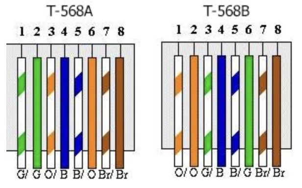

A summary of high and low emotional intelligence (EQ) traits in leaders and employees, and how EQ shapes team dynamics and decision making.
read moreOther articles
MakerWorld Parametric Models with OpenSCAD
How to create customizable parametric models on MakerWorld using OpenSCAD scripts.
read moreOpenSCAD on Apple Silicon
Installing OpenSCAD on Apple Silicon Macs using Homebrew.
read morereMarkable: Local File Transfer Without the Cloud
How to use the reMarkable tablet without cloud sync by unpairing the device and enabling the built-in USB file server at http://10.11.99.1/.
read moreSoC Article 01: From Room to Silicon — The Story of the Computer System
How computing evolved from room-filling mainframes to a sliver of silicon in your pocket — and why that history shapes modern SoC design.
read moreRequirements Writing
Good requirements engineering is fundamental to delivering products that meet customer needs within cost and schedule. A well-formed requirement identifies …
read moreScotland Outdoor Routes
Misc
Historic Scotland (Family £106/year includes entry to Edinburgh Castle): https://www.historicenvironment.scot/
Mapping
read moreMemory … tmux Training Manual: Ghostty, xterm and PVE LXC Terminals
tmux is a terminal multiplexer: it lets you run multiple terminal sessions inside a single window, split panes side by …
read moreInstalling Homebrew on a Debian 13 (Trixie) LXC Container
A verified step-by-step guide to installing Homebrew (Linuxbrew) on a Debian 13 "trixie" LXC unprivileged container, including group setup, prefix pre-creation, and multi-user configuration.
read moreFSM Diagrams in Pelican and Claude Code
Finite state machines turn up everywhere: protocol implementations, hardware controllers, UI flows, parsers. Drawing them well is useful but tedious …
read moreVerilog Lint Skill for Claude Code
I've been using Claude Code for RTL generation lately, and the missing piece was a tight feedback loop between code …
read moreWaveDrom Timing Diagrams in Pelican with Claude Code
Top Museums for Families
Reduce Rack Drum Kit Size
For the Yamaha DTX8 the cymbals mount on to the horizontal drum rack tubes. A more compact setup can be …
read moreExpanding Yamaha DTX8 Drum Kit
TOM
Parts Required for adding 4th Tom (second floor tom) to a Yamaha DTX8 kit.
Mounting bracket for rack: Yamaha …
read moreYamaha Drum App
For Yamaha electronic drum kits (DTX) there is a ‘DTX Touch app’ for iPhone, iPad, Android that lets you more …
read moreCommand Line Disk Usage
NCurses Disk Usage
A useful Command Line Iterface (CLI) for exploring disk usage:
ncduExample output.
read morencdu 2.9.1 …Book: Mastering the command line
Mastering the command line like a hacker by Xiaodong Xu
The book focuses on bash and zsh, which is great …
read moreBetter Python Iterators
Pyhton can convert most (all) lists/collections into iterator objects, this is done by calling
iter()ieread morenum_list = [1, 2 …Packaging Python Projects
How to package a pythin script or project for distribution. Offical Docs are [here][python_package]. Packaging for pip requires use …
read morePelican New Post script
In the aim of keeping the navigation of the Blog posts clean, I have limited my self to a few …
read morePython Base Types
Modify Pelican theme
First figure out which theme you are using. List installed themes via:
% pelican-themes -l simple notmyideapelicanconf.py does not …
read morePelican Site add Tags and Categories list
I think it improves website usability when they are navigatable via the URL.
For example when viewing Posts under the …
read moreJapanese Garden 10 Years on
An update to the Japanese Garden, aorund 10 years after it was built.
read more
The ground cover is being removed in …Python Regular Expressions
Python Regular Expressions Quick Guide:
read more^ Matches the beginning of a line $ Matches the end of the line . Matches any character …Adaptive Filter Theory Notes 1
Notes From Reading Adaptive Signal Theory (5th Ed) by Simon Haykin
Three Basic Kinds Of Estimation
- Filtering - Extraction of Current …
Node Red vs Home Assistant
Node Red vs Home Assistant
Which is better* ?
*better: CPU/RAM efficient, easier to learn and or offer better support …
read moreProxmox Plex Container
With Proxmox installed time to setup Plex in a container, and migrate from Synology NAS.
I am following these guides …
read moreStarting with ProxMox
Beelink N200 Proxmox and Plex
To improve the Plex transcoding options and off load the computation from the NAS, the plan is purchase a BeeLink …
read moreCat8 T-568
Cat 8 Wiring, comes in 2 variants T-568A and T-568B.

Cat8 replaces the need for crimping tools with field termination …
read moreSynology Connecting Across VLAN with active VPN
When a Synology NAS creates a VPN connection it overides the default gateway, except for devices listed as contained within …
read moreTeX hyphenation
When TeX/LaTeX is fully justifying text there are times when it could do better but it does not know …
read moreTeX Paragraph Box
parboxis a LaTeX command used to place a box around text.Remeber that optional arguments are in [] (Square brackets …
read moreLaTeX macros
LaTeX macros can be used as simple text replacments for example:
read more\documentclass{article} \newcommand{\LUG}{LEGO User Group} \begin{document …Tools for Technical Writing
WYSIWYG editor for LaTeX lyx, and a manager for Bibliography JabRef.
Lyx Tutorial: Lyx mac Guide
JabRef Tutorial: Getting Started …
read moreBike Chain Cleaning
Chain Cleaning method:
read moreClean the chain with WD40 (water dispersant). Wipe dry with kitchen roll. Spray with Comma White Grease …Pyhton_virtual_env
Creating/Setup a pyhton virtual enviroment called 'venv'
python3 -m venv venvLoad the virtual env called venv
read moresource venv …Convolution in Python
Convolution in Python, for merging filter responses, creating pascals triangle ...
read moreimport numpy as np a= np.array([1,1]) b …Perforce Update files in a Shelve
Perforce can temporarily checkins of changes that you might want to share with others before fully commiting them to the …
read morePython merge PDFs
Using python script to merge pdfs together.
Install package
pip install pypdfScript:
read morefrom pypdf import PdfWriter pdfs = ['file1.pdf …Pythonista pip install pelican
On the journey towards publish static site generator blog posts from iPadOS, my next step after installing stash on pythonista …
read morePythonista using stash for pip
Installing stash on pythonista
read morePython read a CSV file
Python example for reading data from a csv file.
read moreimport csv with open(data.csv', newline='') as csvfile: spamreader = csv …Python Sinewave
Create and plot a sinewave in python
read more"Home Directory File Structure"
Apples default directory structure is :
/Users/username ├── Desktop ├── Documents ├── Downloads ├── Library # Hidden by default ├── Movies ├── Music ├── Pictures ├── PublicMy current …
read more"JapaneseGarden"
"Potting Bench"
Homemade potting bench, using 15 2.4M Fence boards (£45).


Note for ease of building the height was 1.2M …
read more"Self Watering Propagator"
"Planter"
"Matlab: floating point checking equality"
As previously decribed floating point arithmetic is not associative. Which means it is very easy for floating point models not …
read more"Matlab: linear progressions"
"Matlab: functions inputs parsed based on outputs"
It is quite common to detect how many input arguments have been passed to a function, using
read morenargin(N arguments …"SystemVerilog: RTL Types"
read moreregandwirewere the original synthesisable types. Wires are constantly assigned and regs are evaluated at particular points, the …"Verilog: define if not defined"
To set a default define option while allowing it to be overridden from the command line.
read more`ifndef mode_sel `define mode_sel …"Verilog: shm waveforms"
The best practice is to use a tcl file:
shm.tcl
read moredatabase -open waves -shm probe -create your_top_level -depth all …"Verilog Timeformat"
Time can be displayed during simulation using
%t.$display("%t", $realtime);Timeformat is used to control the way (
read more%t) this …"Tiered Raised Bed"
"OS X disable back gesture"
After accidentally scrolling back a page when browsing the web in chrome too many times. Figured out how to disable …
read more"SystemVerilog: Constrained Random"
A minimal example of constrained random to constraining a 4 bit value to 0 to 11 when randomised.
read moremodule tb …"Verilog: Thermometer Code"
Efficiently create a [thermometer code][wiki] in verilog:
read morelocalparam M = 32; function [M-1:0] therm_code; input [$clog2(M):0 …"Vim: Macro"
When
read more.just will not do (repeats last action) because you need to capture a movement as well, macros are quick …"Find your ruby gems path"
"Bread: Doves Gluten free"
For use with the Panasonic Bread Maker SD-2501 & SD-2500.
Online Manual.Gluten Recipes can not use timer function.
For best …
read more"Verilog: Calculate primes"
"tcsh Remove trailing /"
read more1 2 3 4 5 6 7 8
#!/bin/tcsh set var = "helloworld/" ## http://dbaspot.com/shell/350417-sed-removing-trailing.html set …"F-Stop Loka & Tripod"
F-stop Loka with side mounted Manfrotto 055XPROB (3 stage carbon), with a Manfrotto 488 rc2 head.
{% img centre /images/Photography …
read more"Command line bulk file rename"
To prepend to to filenames
cd to_folder ls | xargs -I {} mv {} addthis-{}or target jpgs
read morecd to_folder ls *.jpg | xargs …"Word WORD the Difference"
Just realised there is a difference between word and WORD in Vim.
WORD is non-blank delimited by whitespace. word is …
read more"List files ignored by git"
"xkill"
I just discovered the
read morexkillcommand, when a window has crashed you can call xkill and get a skull and …"Submit to SGE as if working locally"
Setting an alias in you .tcshrc
alias qrun 'qrsh -V -noshell -cwd !*'or bash
read morealias qrun='qrsh -V -noshell -cwd …"Simulink: Scroll wheel erratic behaviour"
On Mac OS X matlab behaves quite oddly with the track pad zooming in and out very quickly and erratically …
read more"Matlab editor no tabs"
Matlab always use to open text files in tabs in the same editor window. When switching to 2014a documents started …
read more"Simulink: Globally set sample time"
To set each constant in a model to sample time -1:
read moreblks = find_system(dut, 'BlockType', 'Constant'); for i = 1:length …"Simulink: list programmable block properties"
Select a block ie gain in Simulink then in Matlab type:
get(gcbh)This shows the list of properties which …
read more"Matlab: Find all gain blocks"
find_system('BlockType', 'Gain')This will list all gain blocks in currently loaded models. to limit to a particulat model:
read morefind_system …"error: storage class specified for parameter"
error: storage class specified for parameterThere is probably a missing semicolon
read more;in a header file! Just written my first …"Shell redirection"
To redirect stdout and stderr in bash we use:
./ShellFile.sh &> test.logHowever in tcsh that results in:
read moreInvalid …"Floating Point Arithmetic is not Associative"
"Adobe Creative Cloud is ..."
Inconsistent, annoying, cheap?
My main bugbear with the creative cloud application is the way it updates applications. Photoshop CC and …
read more"Octopress categories with different styles"
As I use the code blocks for ingredient lists on my recipe pages I wanted to have a different style …
read more"Verilog: Timeout"
To wait for a maximum of
10nsfor positive edge on clk then carry on with simulation.read morefork : wait_or_timeout begin …"Matlab Remove Elements from Array"
"Matlab: Formatting Strings"
"Matlab: Grid"

To add X and Y grids to plots :
grid on;
To add Y only grid:
read moreset(gca,'XGrid','off','YGrid …"Matlab: Line Breaks in Strings"
Wrap strings with
sprintfto allow the\nto be escaped correctly.read more>> disp('hello\nworld') hello\nworld >> disp(sprintf('hello …"Matlab: Listing field name values of a struct"
"F-Stop ICU Strobies"
My large ICU loaded with my Strobies portrait kit and Canon 580EX MKII.

The collapsed soft box is folded into …
read more"Kettlebell Rack"
 Kettlebell rack with 24kg, 16kg, 8kg, 12kg, 16kg, 20kg.
Kettlebell rack with 24kg, 16kg, 8kg, 12kg, 16kg, 20kg. End detail showing bracing.
End detail showing bracing.
read more Underside of rack.
Underside of rack."Matlab toolboxes with absolute path setup"
When a script or function is called with
read morerun(./relative/path/script)the working directory is changed to the./relative …"Matlab: Array content check"
Checking if an Array contains a number:
input = [1,2,3,4]; check = 4; any(input==4)Check if a …
read more"Matlab: Split Odd & Even Array Elements"
Using Matlab to splitting data into odd and even samples.
A for loop approach:
read moredata_odd = []; data_even = []; for i = 1:length …"Lee Standard Hood"
Available to buy from WEX. Also see Lee Wide Angle Hood.
Hoods or lens shades help improve contrast by stopping …
read more"Licence Types and Short Identifiers"
"Lightroom Load Canon 6D GPS"
"Craghoppers Pro Stretch"
Last year I got a pair of the pro stretch trousers for walking, they were pretty good for walking in …
read more"Ruby Methods and Splat"
Ruby methods can set default values for optional arguments:
def commit(path=Dir.pwd)To take an optional number of …
read more"Thor Adding --verbose"
With a command line Ruby application using Thor for the option parsing I want to be able to run:
read more$ thor_app …"Creating Lightroom Metadata Views"
Lightroom plugins for metadata views are called metadata tag sets and only require 2 text files.
create a folder called …
read more"iTerm Exit Fullscreen"
"Verilog importing envvar"
Based on a Stackoverflow answer, to import environment variables into Verilog you can use:
read moreimport "DPI-C" function string getenv(input …"Fixing Mangled Octopress Tags"
When creating my blog I have been inconsistent with the tag
read morecommand line,Command lineandCommand Linethe case …"Thor Variable Arguments"
"Ruby Print Array"
"Screen Scrollback"
Enter copy mode
ctrl-a [Use cursors of vim motions to move to relevant area.
Space to start selection, space again …
read more"Matlab: leading 0's"
For adding leading zeros to a number the following can be used for 4 decimal places with integer input:
read moredat …"Mavericks Disable Mail Sound"
Since upgrading to Mavericks I get a sound whenever I get mail. I find this very annoying so first port …
read more"Matlab Wrapper Scripts"
To wrap a function with variable input arguments and pass them all on to the wrapped function. Based on a …
read more"Matlab sort_by"
In ruby we can perform schwartzian transforms easily with the sort_by method. This allows sorting enumerators by any property.
For …
read more"Raised Bed, Update"
Update to the raised beds. Delivery of top soil:

Raised bed lined with weed barrier and then 20mm Gravel. Filled …
read more"Tool Acquisition"

Just after Christmas I got a Joseph Bently digging spade (larger than the border spade). Bought from Dunbar Garden Center …
read more"Propagator trays"
Sunday trip to Marryhatton. Getting serious about propagation now, got these seed trays to move the seedlings to after they …
read more"F-Stop Loka Hydration"
Not a review, just noting the default position of the velcro hydration loop, before I remove it. Left shoulder, under …
read more"Ruby iterate over lines in a string"
"Macbook keyboard light not working"
"Git tag and push to Github"
git tag -a 0.0.1 -m "Tag comment" git push --tagsNote: The use of major.minor.patch Semantic …
read more"Beyond the LSB"
If we truncate a number, that is to throw away the LSBs (least significant bits) we loose resolution.
A 4 …
read more"Spicy Chocolate Cake"

Ingredients

That is Ginger not stem ginger pictured, it works, but stem ginger is much better.
read moreDark choclate Shavings (for …"Matlab Function Outputs"
Handling functions with extraneous leading outputs. For example:
read morefunction [a,b] = dummy_function a = 10; b = 20; endfunction [a, b] = dummy_function …"Matlab Shuffle Array"
To shuffle a:
a(randperm(length(a)))Example:
read morea = [10 2 5 20]; a = a(randperm(length(a))) a = 5 …"Bash String Manipulation"
Removal of substring:
string="test string" echo $string remove="test" short_string=${string#$remove} echo short_stringNote that inside the
read more${}string …"Puy Lentil Wellington"
Based on a uktv recipe.

Ingredients
read more150 g Puy lentils 400 ml Water 3 Onions 1 tbsp Sugar …"Octopress, Pages and Custom Domain"
In your
read moresourcesbranch, which is the main branch for writing creating posts, create aCNAMEfile in the sources …"Revert in Git"
and Remove Orphaned Commits.
I use
read moregitxgraphical tool on OS X to find the SHAs for commits. Revert back …"OO Magic Bullet?"
I do not think that there are any magic bullets, best practises can minimise risk but you have to fully …
read more"Edit Octopress Posts"
Creating new posts in Octopress is
rake new_post["Edit Posts"]which outputs the created filename.Posts are prefixed with date …
read more"$display without a line return"
In Verilog to output to stdout without a line return use
$write();Equivalent statements :
read more$write("\n"); $display("");"Object-Oriented Matlab"
Mathworks Article on Object-Oriented programming for Matlab.
A quick example of the syntax:
read moreclassdef sads properties Name SampleRate end properties …"Rocket & Chilli"
The first batch of seeds in the propagator are off to a good start.
Rocket:

De Cayenne, Chilli Peppers:

Soon …
read more"Spring"
"Gnome: disable focus tracking"
Sometime ago I enabled focus tracking the mouse on Gnome. It took a while to find how to disable it …
read more"Rocket"
On Saturday I placed Rocket seeds in my propagator and by Tuesday it had germinated and started to sprout.
So …
read more"Propagator"
I have always had trouble getting seeds to germinate, therefore I have purchased a propagator to help. Ideally I would …
read more"Monkey Patch Octopress"
Based on post_filters by imathis.
First Move the original method out the way with
read morealias_methodthen create a new method …"Raised Bed"
Putting together my first raised bed, 8 foot by 2 foot, 1 plank high.
Cut parts ready for assembly:

The …
read more"Beef Wellington"

Based on :
Jamie Olivers Minced Beef Wellington from Jamie's Ministry of Food.
Ingredients (for 4-6) :
read more1 Large Potato 1 Medium …"Matlab: legend colours"
When plotting several lines in Matlab, I have become aware of how hard it was to see the colours in …
read more"Kitchen: Le Creuset"
Le Creuset do not list pan volumes on there site so for Round Cast Iron:
read moreDiameter Volume 18cm 1.8 … "Matlab benchmarking"
In the following example we test the allocation speed of different types:
read moresamples_to_avg = 10000; for i=1:samples_to_avg tic; t …"Matlab remove values from array"
"brew update fail"
Received the following errors when doing
brew updateon mountain lion:read moreerror: The following untracked working tree files would be …"BirdBox"
Dunbar Garden Centre Over Jan & Feb 2014 ran a 2 for £12 offer on Chapelwood bird boxes. Due to some …
read more"Garden Design Books"
2013 I got my first garden and I had no idea where to begin. So I picked up a few …
read more"Coffee Table"
In 2007 I built our coffee table from 2.5" thick Elm purchased from Lanarkshire Hardwoods.
The wood was rough …
read more"Chandelier"
A new feature in the dining room.


Approximate materials and cost:
read moreSection of plywood ~£10 16 meters of 2.5mm …"F-stop ICUs"
F-Stop camera bags have an adaptable system for trading camera space for other outdoor gear. The swappable section are called …
read more"git submodule update fatal"
$ git submodule update fatal: Needed a single revision Unable to find current revision in submodule path 'vim/bundle/systemverilog'To …
read more"Exact Fit Blinds"
Fitting is relatively straight forward. Use a credit card to place clips in the frame 85mm from the top and …
read more"flip-flop"
A flip-flop (D-Type) is essentially 2 latches in series with the enable to one inverted. This stops the flip-flop from …
read more"Reverting in git"
I use to use
read moresvn revertto roll back local modification and get back to the state I was in …"rtorrent move on download completion"
rtorrent moving torrents upon completion:
read more# Torrents go in ~/Torrents # Incomplete Downloads in ~/Incomplete # Upon Completion Data is moved to ~/Seeding …"Check you current Vim colorscheme"
This is not a foolproof method, as vim colorschemes are just vim commands but by default they set:
read morelet g …"Cshrc alias loop"
Here are some aliased commands which stop line wrapping on really long lines, making the output much more readable:
read more# Stop …"Vim: Status line"
Deciding to see if I could make my vim status line a bit more practical for myself. I decided to …
read more"Tray Bake Chicken Dinner"
Tray Bake Chicken Dinner.
{% img centre /images/TrayBakeChickenDinner/morganp-20130703-TrayBakeChickenDinner-IMG_2247.jpg %}
Based on recipe from "Jamie Oliver's Recipe" iOS app.
Ingredients …
read more"Cowboy Chilli"
Cowboy Style Chilli
Based on recipe from "Jamie Oliver's Recipe" iOS app.
Ingredients (for 6)
read more1KG Diced stewing beef …"Sweet and Sour Pork"
{% img centre /images/SweetSourPork/morganp-20130925-SweetSour-IMG_4134.jpg %}
Based on recipe from "Jamie's Ministry of Food"
Ingredients (for 2)
read more200g Basmati …"Chicken Tikka Masala"
{% img centre /images/ChickenTikkaMasala/morganp-20130910-ChickenTikkaMasala-IMG_3991.jpg %}
Based on recipe from "Jamie's Ministry of Food"
Ingredients (for 4)
read more4 Chicken breasts …"Lightroom Library Metadata Panel"
The metadata panel in Lightroom has always felt a little crowded to me. It shows too many dialog boxes or …
read more"Hugin 2013 Released"
11 Months since the last Release Hugin 2013.0.0 is released.
One of the best photo stitchers available at …
read more"Matlab repeat a matrix n times"
repmat(matrix, [repeat_y, repeat_x])
Horizontal
read morerepmat([1 2 3],[1,4]) ans = 1 2 3 1 2 3 1 2 …"Lightroom 5.3 RC Beta available"
"OS X Handbrake install libdvdcss (Decryption)"
"Matlab setting Simulink simulation stop time"
Running the Simulink model model.mdl from matlab for a specified time:
sim('model', stoptime)Where stoptime is a number …
read more"VIM: Convert tabs to spaces"
Good programming practice is to use spaces to indent code rather than tabs. Due to tabs often being rendered differently …
read more"set vs setenv"
setenv allows sub shells to inherit the value.
Set
read moreset x = "twenty" echo $x > twenty ## New Shell csh echo $x …"For loops in csh/tcsh"
"Gardener C14e"
The programs available on your Gardener C14e water computer (timer) are:
read moreProgram Cycle Duration 00 None 0 01 Every 6 … "Name Spacing in Matlab"
A typical work flow in Matlab involves a folder filled with scripts and functions. Over time this folder grows until …
read more"Photographing stars avoiding star trails"
While not attempted getting good images of the milkyway yet every so often I see some good examples and do …
read more"Find RedHat Version"
cat /etc/redhat-releaseReturns some thing like:
Red Hat Enterprise Linux Client release 5.7 (Tikanga)Find Kernel version using …
read more"Unlocking a Nokia 8310"
"Weather alerts via eMail from the MetOffice"
In the UK you can now get regional weather alerts from the Met Office.
Unfortunately it does not break it …
read more"tcsh check a var exists"
To check if an environment variable exists in .mycshrc or shell scripts
read moreif ($?TERM) then echo "TERM is $TERM" endif …"Micro Irrigation"
As the growhouse stops the plants recieving rain I decided to try micro-irrigtion. It comes with a gardnen computer to …
read more"Growhouse"
A cheap (~£15) four tier Botanico growhouse, with my current selection of potted herbs.

Over the course of the summer …
read more"Ruby Evaluate Envvars in string."
In ruby Dir.entries takes a path and returns a list of its contents. However it does not deal with …
read more"Lightroom Collections Whats the Point?"
After using Lightroom for over 6 years I still do not see the point in Lightroom Collections.
Scott Kelby Describes …
read more"Terminal Colours"
I have decided to clean up my vim colorschemes. I have been using ir_black for sometime but it does not …
read more"Pork and Beef Meatballs"
Meatballs (£? a portion) time to table ~?.
{% img left /images/Meatballs/.jpg %}
Ingredients (for 4)
read more400 g lean pork mince 400 …"Home Wi-Fi"
On the continuous search for a decent ADSL, Router and Wireless access point. I have tried many (unscientifically). Finding that …
read more"Stackoverflow sites and images"
Stackoverflow have supported markdown for a while. The syntax for showing an image is :
read more![Holes in Leaf 1][1] [1 …"First Tree"
The first tree I purchased was this Yoshino Cherry: Prunus x yedoensis Ivensii for £40 from Smeaton Nursery.

For the …
read more"Ruby: optionally add path separator"
I was wanting to use Dir.glob to get a file list and wanted to do
read moreDir.glob( path + '*')but …"Navigate Verilog with VIM"
Using
gfIn your vimrc
read more" gf goto_file, automatically add search for these file extensions :set suffixesadd+=.v :set suffixesadd+=.sv …"Beef & Guinness stew with dumplings"
Stew (£? a portion) time to table 3 Hours.
{% img left /images/BeefGuinnessStew/morganp-20130518-BeefGuinnessStew-IMG_0932-Ready.jpg %}
Ingredients (for 4)
read more2 * 375 g …"Coffee Cake with Rummy Cream"
Cake (£? a portion) time to table ~?.
{% img left /images/CoffeeCake/morganp-20130518-CoffeeCake-IMG_0822-Cake.jpg %}
Ingredients (for 8)
read more3x25 ml double espresso …"Add about page to Octopress"
To add static about page to octopress blog, assuming that octopress has been already setup:
Create the page from the …
read more"Push local folder to remote server over ssh"
After struggling to get the rake task for octopress to deploy I decided to fall back to the command line …
read more"Black Forest Gateau"
Cake (£1.23 a portion) time to table ~1 hour 30 minutes.
{% img left /images/BlackForestGateau/morganp-20130505-BlackForestGateau-IMG_0770-Cake2.jpg %}
Ingredients (for …
read more"Lamb Keema"
Lamb curry (£1.95 a serving) time to table ~1 hour.
{% img left /images/LambKeema/morganp-20130505-LambKeema-IMG_0759-Final.jpg %}
Ingredients (for 4 …
read more"Ubuntu and the Jetway ADPE4S"
Still unresolved
The Jetway ADPE4S uses a Marvell 88SE6145 chip which a number of users have had trouble getting to …
read more"Ubuntu (Linux) List Disks"
sudo lshw -class disk -class storage -shortOutputs :
read moreH/W path Device Class Description ===================================================== /0/100/1c.3/0 …"BT Broadband messing around with your DNS"
BT broadband has BT Web Address Help enabled by default. This allows then to redirect you to another site if …
read more"JavaScript Net Curtain"
Normally this would just end up on my link blog, but thought it was worthy of a proper mention.
read more"BitTorrent Sync, free rival to DropBox"
BitTorrent Sync although still in Beta offers a App and protocol for DropBox like file syncing. As it is an …
read more"Lightroom 5 Public Beta"
The Lightroom 5 Beta is out now, Free and active until June 2013.
From adobe :
New Features in Lightroom 5 …
read more"ISO 8601 - Standardised Date Format YYYY-MM-DD"

ISO 8601, to me looks a lot like reversed British format which has been my standard for including in file …
read more"Nik Collection ($149 or FREE)"
Nik Software (HDR Efex Pro, Silver Efex Pro) was recently purchased by Google, since then not too much has happened …
read more"Testing Matlab Arrays for Equality."
Testing a matlab array for equality can be doen a few different was some have surprising side effects if your …
read more"Algebra : Properties of Real (ℝ) Numbers"
Commutative
Configurable order of numbers:
x+y = y+x xy = yxAssociative
Order that multiplication is applied :
read more(x+y)+z …"Vim Code Folding"
To enable code folding in Vim type (from normal mode):
:set foldmethod=markerOr add this to your
.vimrcread moreset …"Nik HDR Efex Pro 2.0 $84.99 (even in the UK)"
Initially Launched at $99 in the US or £99 in the UK. Today they seem to be charging $99 regardless …
read more"The unworkable Lightroom to iPad workflow"
After a bit of research I decided to give PhotoSmith Version 2.2 a go, it is the most expensive …
read more"Ruby duck typing Strings and Arrays"
How to get method which handles a single string input or an array of strings?
Splat *
* turns single strings into …
read more"Reverting rtorrent version on Snow Leopard"
After running a
brew upgradertorrent was plagued with segmentation faults. Which look something like :read moreCaught Segmentation fault, dumping stack …"Lightroom 4.3 RC1, Support for HiDPI (Retina) Displays"
A new Release Candidate for Lightroom is out, Lightroom 4.3 RC1. Expires 31st Jan 2013.
For me the main …
read more"Canon 2012 Winter Cash Back"
The new Canon Cash back offer IS now valid for purchases between Thursday 18th October 2012 and Thursday 24th January …
read more"OS X Screen Capture"
To capture the screen on OS X :
⇧⌘4 : Selected area to capture.
⇧⌘4-space : Capture a window.These are defined in …
read more"LEE Wide Angle Hood"
Available to buy from Dale Photographic or WEX.
Hoods or lens shades help improve contrast by stopping out of frame …
read more"Print nested array structures in table format"
Problem
Take an array of arrays and format it for displaying to the terminal or outputting to a text file …
read more"Converting flat structure into a nested structure"
Given a flat hierarchy of data comprising level and a label, aim to nest the lower level of objects in …
read more"Safari 6 not playing YouTube content"
After getting Safari 6 it seems that YouTube is no longer letting my watch video as html5 video formats and …
read more"Calculating Regression Coefficients in R"
For this example we will have a data file with two columns of data labelled A and B. For example …
read more"Git Submodules"
For code reuse within I have found Subversion externals really nice to work with. Instead of copy and pasting code …
read more"Retina Support for background images"
This is based on a guide to adding retina support to websites.
To add a tiled (repeating) background cretae 2 …
read more"Speed up Mission Control Animation"
If entering Mission Control (ctrl-up) is taking to long you can speed up the animation entering the following in the …
read more"Syncing Google Contacts in Mountain Lion"
A the time of writing Google exchange syncing only works on mobile devices, which is slightly annoying but mail, contacts …
read more"Syncing Safari via dropbox for pre iCloud OS X"
THIS NO LONGER WORKS, IF IT EVER DID :(
When you add a link to safari, it replaces the link to …
read more"Vim consistent spelling correction highlighting"
In gvim and mvim incorrect spellings are highlighted with a squiggly underscore ala MS Word. vim in a terminal (xterm …
read more"Get snipMate working, a #vim plugin"
"OS X Installing R"
"Mountain Lion Setup, Part 5 /etc/hosts"
For ssh and ping to local machines with out the .local extension I added them to my /ets/hosts file …
read more"OS X Get Info Summary for multiple items"
If you use the ⌘I shortcut in finder with a file selected you get a 'Get Info' window. If you …
read more"#vim toggle between last 2 edited buffers"
ctrl-6Demo
For the example we will create 3 new temp files and then open them in vim.
read moretouch vim_test1 …"Mountain Lion finding the Library folder"
From OS X Lion the Users Library folder has been hidden. To find it make Finder the active application, that …
read more"Mountain Lion, Twitter and Flickr integration"
The settings for Twitter and Flickr feel a little hidden at first. To set them up go to
read moreSystem Preferences …"Mountain Lion Setup, Part 4 Apps"
"Mountain Lion Setup, Part 3 : Little Snitch & Dotfiles"
Little Snitch
There is currently a preview (Beta) of [Little Snitch 3][littelsnitch3]. If you have not come across Little …
read more"Mountain Lion Setup, Part 2 Homebrew & RVM"
Following on from Macbook Pro Setup, Now it is time to install some of the command line tools.
I have …
read more"Xcode 4 Install, Disk Usage"
Some info on what has changed in Xcode 4.3. Latest is 4.4 but a lot changed in 4 …
read more"Mountain Lion Setup, Part 1 : Upgrade Lion"
MacBook Pro with Lion arrives, before installing any other software apply for the Up-to-Date Programme for free a mountain lion …
read more"Mountain Lion default $PATH"
/usr/bin:/bin:/usr/sbin:/sbin:/usr/local/binTo Reset it back to this value run (from /Applications/Utilities …
read more"Lion default $PATH"
/usr/bin:/bin:/usr/sbin:/sbin:/usr/local/bin:/usr/X11/binTo Reset it back to this value run …
read more"Web Automation with Watir"
"Transferring a Memory Map 2012 map to iOS"
I have specifically been trying to find out how to transfer my full GB Memory Map OS 1:50K 2012 …
read more"Mac Mountain Lion Compatibility"
One of the limitations of mountain lion is that they are only going to support 64 bit Kernel extensions, the …
read more"Pragmatic Programmers, Dropbox integration"
After deciding to try out epub on the kindle, as I noticed people are listing epub as an apple format …
read more"Lightroom 4.1 Available"
Lightroom 4.1 is now available. Not much looks like it has changed between this and the RC1 release version …
read more"Subscribe to a channel on YouTube iPad"
The subscribe button on the iPad youtube app is quite well hidden.
View a video from the channel you are …
read more"Gelaskins iPad cases"
Got the steam punk Gelaskins case yesterday, they can be a fiddle to fit but incredibly thin and adds grippines …
read more"iTunes Match and Genius, Why cant we have both?"
In iOS 5 If you have iTunes Match enabled ie to download your songs from the iCloud while on the …
read more"iPad Docks / Cradles"
Around up of nice looking ipad docks / cradles
From Just Mobile
read moreUpStand Encore Desktop Slide 
[  ][ encore]
][ encore][  ][ slide ]
][ slide ]£32.50 £48 … "Device Ownership Password"
While using a pool laptop from work and trying to connect to my home wifi I am prompted for my …
read more"Create And,Or of multiple booleans"
To reduce an array of Booleans to a single Boolean using enumerables reduce method:
read more[true, true, true].reduce( :| ) ## OR => true …"rspec testing exceptions"
"rspec testing exceptions (old post)"
"Ruby special exception variables made mnemonic"
In ruby you can catch StandardErrors using begin rescue end
read morebegin #Some thing which might fails rescue $stderr.puts $! end …"Handle www. and no-www for better google juice"
There was an interesting post on hacker news recently, safeshepherd suddenly fell off the google for their own name. The …
read more"Big Monitor Litmus Test"
A recent article by sef about how to judge an engineering companies respect engineers and the strength of the engineering …
read more"iPad 3 Tethering"
Three now have tethering available for the iPad 3, which can be read in the comments by moderators on the …
read more"Vim Terminal Colours"
"Using Github behind a restrictive firewall"
When working behind a restrictive firewall, which limits ssh connections you may be running into some of the following errors …
read more"Ubuntu, formatting a 3TB drive"
I started off following the ubuntu guide for installing a new drive, which uses fdsik to create the partitions how …
read more"Camera Apetures "
The camera aperture is how far the iris is kept open during the exposure. A wide aperture, large opening lets …
read more"Syntax error: Not a valid color stop: Sass::Script::String: white"
After making a few updates to my site it stopped working after deploying. The issue was that the gem version …
read more"Minify your HTML from Sinatra"
There are gzip compression options available but when I looked at this a long time ago I found that the …
read more"Joe Cornish, Book Series"
Joe Cornish has been a great influence on my photography, he traditionally works with a large format field camera and …
read more"Light and Land, Book Series"
While the Light and Land books do not have to be read in order I think it helps as they …
read more"Printing Photos, UK cost analysis for larger formats."
High quality printers actually have lower resolutions than you would expect. Nothlight Images have a good article on it here …
read more"Understanding Colour Spaces (Digital Imaging)"
When working with digital images some effort should be put into understanding the colour space. Which basically means that for …
read more"On Location with Jeremy Cowart (Kelby Training)"
While enjoy photography I am not that interested in portrait, fashion or lifestyle photography but for some reason I decided …
read more"Sinatra application in ./lib and views, public routes not working"
I have been setting up my recent Sinatra projects with a standard ruby project layout putting all of the application …
read more"Update your RVM Ruby and migrate gemsets"
Update RVM
$ rvm get headList current versions, and all versions
$ rvm list $ rvm list knownSelect the version you …
read more"Bash script get current script directory"
Sometime a script needs to now the directory that it is executing from, the best solution for this is:
read moreDIR …"Encoding::UndefinedConversionError - "
Are you running into the following error
Encoding::UndefinedConversionError - "\xE2" from ASCII-8BIT to UTF-8:If you are using Ruby and …
read more"Trying to disable Caps Lock on Unix systems"
Entering the following command in to your .bashrc seems like a simple way forward.
xmodmap -e "remove lock = Caps_Lock"However …
read more"CSS (Via SASS) Seperating Colour and Position"
While working on this site I wanted to find a simple way of trying out multiple stylesheets for different colour …
read more"User selectable stylesheets (Using Sinatra)"
Working on my site design I thought it would be nice to have user selectable stylesheets, say a black text …
read more"What shell am i using?"
If you are working on a new system or with multiple environments it is good to know what type of …
read more"SVN multi-line comments on the command line "
Answer:
svn commit -m $'Line 1 \nLine 2'The Problem
Committing to subversion on the command line and using escaped …
read more"unix mail command, delete all messages"
Cron jobs can have there results returned as mail via the unix mail system. If left unchecked for a while …
read more"list_temp_files script"
A simple script for finding temp files from the current directory and below. I often run this before adding a …
read more"irb as a Megapixels calculator"
I have just added the method below to my ruby .irbrc file for quickly calculating image megapixels. from OS X …
read more"Vim, paste from insert mode"
ctrl-r "Actually
ctrl-r reg, where " is the unnamed register from the last yank or delete.Why
If you have done …
read more"matrix: A Ruby Standard Library"
Originally written as an assignment for Ruby Mendicant University.
matrix is part of the Ruby Standard Library
Usage
A note …
read more"Recursive grep, with filtering"
I noticed today that greps recursive function is different to finds recursion.
find ./ -name *.txt grep -R 'text' *.textThe …
read more"Finding Tracks not in iTunes"
"Photo software update, Hugin 2011.04 & Lightroom 3.6"
Lightroom 3.6 has been released. Downloads for Mac and Windows.
Hugin 2011.04 has also been released.
read more"Ruby get a users real name"
There does not appear to be a nice way to get a current users real name in ruby. The best …
read more"Ruby send message to stderr"
"Suppressing Warnings in Ruby Scripts"
Suppressing warnings is usually a bad idea but if you understand the risk and want to carry on regardless. When …
read more"Setting Ruby Defaults '||' vs 'fetch(){}'"
There is a very good presentation Confident Code by Avdi Grimm author of http://exceptionalruby.com/. Previously presented at Cascadia …
read more"Benchmarking Ruby, explicit vs implicit returns"
Back in 2009 barkingiguana wrote about how explicit returns
read more'return "String"'was slower than an implicit return, ie just letting …"Tagging a git repo and pushing tag to github"
This assumes that
originis the label for github.
Tagging a github repo for my gem releases I do:read more$ git …"Arrays 3, write idiomatic Ruby"
Previous posts arrays and arrays2
Based on a post by barkingiguana, some idiomatic ruby ways to handle arrays. Ruby tries …
read more"Ruby Search and Replace Script."
A small standalone script that search through a file doing text substitutions.
read more1 2 3 4 5 6 7 8 …
"Photography Workshops"
Just making a note to self to check these regularly for updates
Joe Cornish 1-2 Day Workshop
read more
Light and Land …"warning: already initialized constant"
Do you some times see:
read moreFileUtils.rb:93: warning: already initialized constant OPT_TABLE FileUtils.rb:1176: warning: already initialized constant …"Homebrew list outdated packages"
"Ruby Arrays Concatenation and Subtraction"
Building on my original Ruby Arrays article a few more things you can do with Ruby Arrays.
Concatenation
read morea = [1 …"Ruby Blocks for better code reuse"
While working on some disk space / folder structure scripts I had several functions which hierarchically search the disk then performed …
read more"Make Ubuntu Samba share show up on OS X 10.6 finder"
Install Avahi, it like bonjour auto discovery but for linux, then tell it about your servers samba service.
read more$ sudo apt-get …"New Macbook Air (2011) & OS X Lion"
The new (July 2011) Mac Book Air is now out, shipping with Lion.
The combination of these two fixes some …
read more"Get latest Ruby 1.9.2 build with RVM"
"Using ~/.ssh/config and no passowrds with Mac OS X"
Using ssh to securely connect with servers from the terminal is pretty easy. set up a public key and a …
read more"Using ~/.ssh/config and no passwords with Mac OS X"
Using ssh to securely connect with servers from the terminal is pretty easy. set up a public key and a …
read more"Ideas 1st July to the 3rd July"
When working with HDLs (Hardware Description Languages) there a few things that could be improved/made easier:
Renaming a file …
read more"Ruby Basic File Read and Write"
Read text file with one line:
Write text with one line :
Explanation and other ways
When reading a text file …
read more"uninitialized constant Compass::Logger"
Working on a joint project an error started showing up when trying to perform migrations.
read more$ rake db:migrate VERSION=0 …"Sinatra ActiveRecord DB config on Heroku"
To make an automatic ActiveRecord database connection using ENV['DATABASE_URL'] The following snippet can be used:
From ActiveRecord 3.2 …
read more"Ruby script connect to DB using database.yml"
To connect to a rails style DB config outside of the normal workflow, or using a database.yml in a …
read more"Setting up PostgreSQL on OS X"
An old guide is written on the Apple Developer Forum however if you are using Homebrew it is much simpler …
read more"Ruby Arrays, Part 1"
"Installing gist.vim"
This vim plugin will allow you to gist directly from vim, simple way is just :Gist to gist entire file …
read more"Obnoxious gem warnings"
recenlty after updating rubygems Istarted getting a lot of warning like this when running ruby or executable gems:
NOTE: Gem …
read more"Recent issue with building Gems"
When running gem build on a new library I have been working on I started getting the following error:
read more[ruby_svg_light …"Lightroom Tip press ⌘/ to see all possible shortcuts"
I have captured all 5 lists here, but they are only a ⌘/ away.
Library

Develop

Slideshow

Print

Web
read more
"bash scripts and cron"
I have not fully read it but it looks like this is a good guide to bash scripting. A few …
read more"vimfu end of line character placement"
In Vim to insert text before the cursor press 'i', to insert text after cursor 'a' or to edit at …
read more"Vimfu Reindent"
"Behaviour and State"
Classes are a basic Object Orientated Structure which encapsulate state and behaviour. Some times you just require to capture state …
read more"Better Open Source Project Setup, with RVM & Bundler"
Based on 'Raise the bar, lower the pressure' given by Durran Jordan at ScotRubyConf 2011.
There has been some debate …
read more"Schwartzian Transform"
I recently heard about the Schwartzian transform, which is a sorting idiom from perl. It allows an array of objects …
read more"Reading List"
"'unregistered torrent' flush the DNS"
If a torrent application has been running and torrents start showing a status of 'unregistered torrent' a likely cause is …
read more"Ruby CLI user input using gets"
Using a while true loop with 'gets' and a case statement, can create a compact command line interface for ruby …
read more"Working From Home, Practising Enfuse HDR"
"Amaras Site Updates"
I have just finished some minor updates to the site. The largest is the move to Droid Fonts, Google Fonts …
read more"ORM(Activerecord) or Ruby Sort"
Based on an old Article I wrote, investigating incase sensitive sorting performance.
I have an active record model call Tag …
read more"Beginning Astro Photography"
None of this has been tried yet but from various sources I have created this list:
Once you have telescope …
read more"Activerecord Find All/Multiple"
Using Tags (An active record model) to find tags by the tag property:
read moreTag.find_by_tag("Ruby") Ruby Tag.find_by_tag(["Ruby …"gem permissions on WebFaction"
After making a few updates to my site I decided to upgrade the version of sinatra I was using in …
read more"Sinatra regex routes"
The routes for my site have been growing since adding pagination (/articles/older/) and tag filtering. As well as the …
read more"Mac mini (mid 2010) 8GB memory upgrade"
"My Backup Strategy"
Considering various raid strategies I decided that Raid 5 would be too limiting and have previously found raid striping systems …
read more"screen -x not connecting when running as an other user"
I have been running into issues with screen when switching to another user:
read more$ su otheruser > password $ screen -x > Cannot open …"Ruby Block Selection in Vim (Plugin)"
A new very cool plugin for Rubyists using Vim. RubyBlock TextObjects created by Drew Neil from Vimcasts.org. Once installed …
read more"Tagging a git repo for a Release "
I think it is good practise to create a read only tag when releasing an application. This allows you to …
read more"Fixing Ncursers on OS X 10.6.3+"
Currently OS X 10.6.3 - 10.6.5 the ncursers library is broken. A hacky fix is to copy …
read more"Mac OS X libSystem cache out of sync"
For various reasons Mac OS X (at least 10.6) can get the system cache out of sync with the …
read more"Put methods not working with Classy Sinatra apps"
Since moving to Classy Sinatra applications I have not been able to get put and delete methods to work correctly …
read more"rake aborted! undefined method `info' for nil:NilClass"
I am currently switching between runing migrations locally on an sqlite3 database and postgres for production on Heroku.
When switching …
read more"Sinatra Heroku and config.ru"
Rack applications often require a config.ru for deployment. The standard config.ru for classic sinatra applications is well documented …
read more"Sinatra Session Extension"
I have just started to use a sinatra extensions called Sinatra Session. The write up on the main site is …
read more"Sinatra reload source file changes in development mode"
Sinatra Reloader is a sinatra extension which reloads source files while in development mode, this functionality was removed from base …
read more"OS X open finder from command line"
"Stop/Start and Restart Samba on OS X"
To Stop Start and Restart Samba on Mac OS X 10.6:
read moresudo /usr/sbin/smbd stop sudo /usr/sbin …"Natural HDR Images in Lightroom"
NB: By default the image is only 500pixels on the long edge. By donating to the project you can remove …
read more"Ruby each or delete_if"
In ruby some times you want to iterate over an array and remove items that meet certain conditions, if using …
read more"Storing secret keys in Ruby config files an approach"
I have for a while wondered about an ideal (good) approach to storing api keys in config files in ruby …
read more"Remove sensitive data from git"
"Amazon Drops EC2 Web Service Prices"
The new EC2-Pricing also includes a new Micro service. This micro service is intended for small apps servicing tens of …
read more"Ruby Regular Expressions Lookahead / Lookbehind"
I recently discovered a feature of regular expressions called lookahead. This means for a match the lookahead must exist but …
read more"Ruby Time save and Restore (serialise)"
One method to save a time and restore it correctly:
read moredef get_time_run ## File Access based on ## http://rubylearning.com/satishtalim …"Mac OS X Harddrive Spin Down Time"
The Preferences menu in OS x give you the option to turn off Hard Disks whenever possible to save power …
read more"Mac OS X Default Path"
As this seemed to be a useful post on my old blog I am reposting it. Just in case the …
read more"Error: NoMethodError: undefined method `compact' for nil:NilClass"
When running a sequel migration I kept getting this error:
Error: NoMethodError: undefined method `compact' for nil:NilClassMy setup …
read more"Basic grep usage"
Grep is a unix (and mac os x) command line tool to search files for text.
read more
1) Search for all …"Removing Ports OS X"
"Active Record attributes simplify update and create."
In Active Record when updating records I used to have an very manual process to this some thing like:
read more@todo …"Active Record create unique or return existing element"
When working with databases it is often a requirement to have unique elements (columns) which are not the primary key …
read more"Activerecord queries on table joins"
An example of joining tables through active record models. There is a good tutorial on the basics of Activerecord joins …
read more"Recover (Bulk Download) your Pictures from Flickr"
Flickr is a great way to backup your photos and other images for around £25 a year you get unlimited …
read more"Benchmark your website for load times."
I have been wondering how to do this for a while and accidentally discovered it while perusing this heroku page …
read more"@philip_roberts taught me a thing or two about CSS"
CSS or Cascading Style Sheets are used for styling html elements. HTML elements can have id's, which must be unique …
read more"Turn a .jar file into a mac .app"
Following this article lets you turn a executable java .jar into a mac appliction (.app). The Tools are only available …
read more"Adding USB drives to a headless Ubuntu Linux box"
After adding some USB2 (NTFS formatted) drives to a headless Ubuntu server, they were not auto-mounted so I had to …
read more"Installing git on a clean build of OS X"
"Get client IP on Heroku"
I have been trying to use the GeoIP Rack App, by copying this gist in my Rack stack with a …
read more"Sinatra running on Heroku"
"[vim] Indenting with Vim "
"OS X iTunes play .ogg videos"
Pragmatic TV release there screen casts in iPod, Quicktime and Theora Ogg formats. Since Theora Ogg seems to be the …
read moreTasks Using Absolute Delays
As previously mentioned SystemVerilog introduced abolute delays in the form of
read more#1s;,#1ms,#1us,#1ns. Using these as values passed …"jQuery clear form on focus and restore on exit"
I used this as a jQuery reference to hide and show default text in forms.
read more<head> <script type=”text/javascript …"WebFaction problems restarting nginx"
After updating my website on webfaction nginx kept saying permission denied and when I tried to view my site I …
read more"Vim show lines over 80 charaters long."
This snippet can be added to you ~/.vimrc to highlight long lines.
read more" Highlight lines over 80 characters long with red …"Vim search and replace"
To search in Vim just press (apple-f for macvim) / then search string.
/searchThis will highlight all occurrences of 'search' …
read more"Homebrew package management for Mac OS X"
Homebrew is a new package management system for Mac OS X. A good review/tutorial on EngineYard.
Update 20-August-2010
read more
Then …"Creating executable gems"
This is not necessarily the correct way of creating executable gems but a method which worked for me.
Assuming we …
read more"gem install memory_usage"
Just released my first gem 'memory_usage' Version 0.0.1.
$ gem install memory_usageAssuming the gems folder has been set-up …
read more"Save space on your Mac by going Monolingual"
"64Bit Handbrake for Video Encoding on Mac OS X"
If you are trying to use the 64 bit version of handbrake on Snow Leopard do not for get that …
read more"MacBook Power Consumption"
MacBook3,1 (2007) Intel Core 2 Duo 2.2GHz Hard drive and memory upgraded to 320GB and 4GB
Graphics GMA …
read more"Ruby runnable and includeable"
I might have just made up includable, but I like it.
Some times you have written a ruby script (using …
read more"M4B Audiobooks on Android"
The *.m4b extension is used for audiobooks on the iTunes Store and is a convenient (if you have an iPod …
read more"GitHub command line tools with static paths"
I have written a few command line tools in ruby which I use to perform file system maintenance. Mainly sorting …
read more"Ruby parsing torrent files for meta info"
There currently does not appear to be any really good torrent file parsers available via the gems system.
rubytorrent seems …
read more"Open Office Impress AutoStart"
Open office by default does not have a mode to auto start the presentation when launched. With the ImpressRunner plugin …
read more"Super simple Ruby list directory contents"
"Mac OS X run nginx as a user process"
I do not like having to use sudo to run development servers for testing web applications. sudo should be reserved …
read more"Add HTTP (web) control over your InfaRed devices"
Using the new IR ANYWHERE IR OVER IP MODULE you can send web requests that get turned into standard consumer …
read more"Nginx Enable Directory Listing"
Directory listing can be enabled (disabled by default) by adding this:
autoindex on;Example usage
read morehttp{ server { #Server with no …"Stop git status monitoring file permissions"
By default git status returned differences in file permissions. To turn if off run:
read more$ git config core.filemode false"How to test subdomains on a development machine"
I recently documented how I installed Ruby Enterprise and nginx on Mac OS X. Here we see how to make …
read more"413 Request Entity Too Large"
The '413 Request Entity Too Large' Error message is because you have filled in a form and are submitting it …
read more"Installing Ruby Enterprise on Mac OS X"
Download ruby enterprise and follow instructions on page. The exact commands I used are:
read more$ cd ~/bin $ wget http://rubyforge.org …"Ruby Memory Issue on Web Faction"
"Matlab Scripting Axes Properties"
Matlab figure properties which can be set through the properties editor can also be set by scripts. My main stumbling …
read more"Sinatra File Upload"
A simple Sinatra web app to upload a single file. Also available as a gist, based on http://pastie.caboo …
read more"Webfaction new user with access to their own site"
With Webfaction you can create new users with there own home area but there is no straight forward way to …
read more"Ruby, Ruby, Ruby, why are you so wierd at times?"
This feature of ruby keeps catching me out as the behaviour is quite unexpected (by me).
I can use a …
read more"Testing tweets from Production server This should be working!"
"Ruby incase sensitive sort"
Ruby has a .sort method which sorts basic objects. it is case sensitive though so Zebra is before apple. Using …
read more"iTunes play FLAC on OS X"
Fluke for mac can be used to get iTunes playing FLAC audio files. However it is currently broken for Snow …
read more"Ruby and gemspec"
I have just forked and cloned a project on github and discovered *.gemspec files. They are a nice way of …
read more"Ruby .nil? tests fail ? you really want ||="
I recently discovered ||= in ruby. Its main use is for initialising a variable if it does not already exists, this …
read more"Installing the ruby gem twitter on webfaction"
[Update]
read more
As this is a long post I am putting this update at the top. If you just want to …"gem install with out the docs"
When I install gems on my server I do not get any of the documentation which is normally 3-5 times …
read more"Sinatra blog retrieving next and previous ids"
When displaying blog/articles it is often nice to have previous and next posts. Simply -1 +1 from the current …
read more"Sequel ORM Migrations"
"Amaras Finally Online"
Just a short first note to announce the fact that the site is finally up.
We are running on WebFaction …
read more"FourThirds Sinatra RESTful example"
"Ruby include (require) local files"
"Ruby Logger"
"Ruby Performance Measure"
"Ruby run (execute) command line"
"Sinatra 1.0 Released"
Sinatra 1.0 has been released!
When you install the new version the old one are still left behind. This …
read more"Sinatra and compass sending compressed cached CSS"
"GitX"
Git has a hand full of GUIs available on Mac OS X, gitk proved a little tricky to use but …
read more"Ruby Time Formats"
I have been playing around with getting my blog posts timestamped I found the Ruby Time Docs to be very …
read more